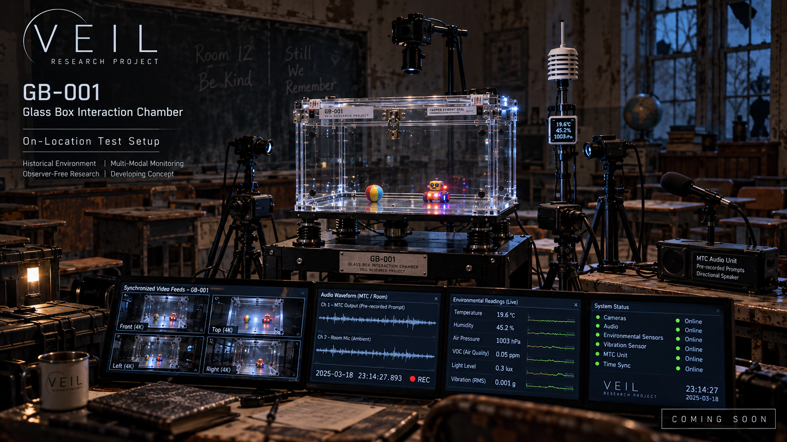

Design
The conceptual platform uses environmental isolation, transparent walls, synchronized observation and measurable interaction points.
A proposed transparent, raised, isolated chamber designed to support instrumented sub-experiments under repeatable, documented conditions.

The conceptual platform uses environmental isolation, transparent walls, synchronized observation and measurable interaction points.
Toy-object, historical-object and communication-panel proposals are deferred until their mechanisms, objective endpoints and controls can be justified.
Assess vibration, airflow, thermal variations, electrostatic forces, human access and sensor reliability.
Concept and engineering planning. The chamber has not been built.
These are requirements and decision criteria to develop—not completed validation or an indication that all four gates have been passed.
Transparent chambers, vibration isolation and instrumented enclosures are established. A comparative apparatus review remains incomplete.
Airflow, electrostatic fields, mechanical movement and temperature are measurable; historical objects and intentional communication have no established explanatory mechanism.
First consider a neutral bench pilot measuring chamber drift and background forces. Any object-specific proposal requires blinded, preregistered comparisons.
Do not fund interaction experiments until a falsifiable outcome distinguishable from conventional effects is independently reviewed.
VEIL’s planned instruments share a common emphasis: synchronized measurement, rigorous controls, raw evidence preservation and transparent review.
Contact · Collaborate · Support →
